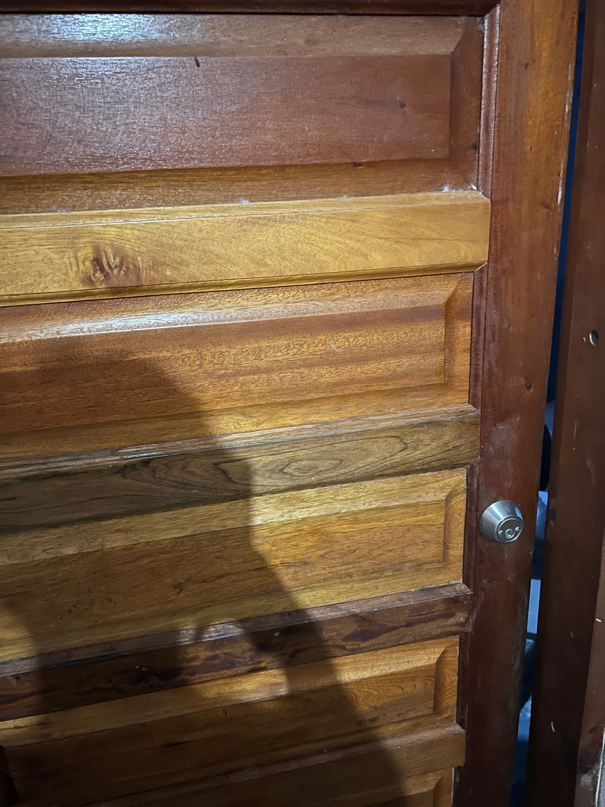

|  |
🔑 Object: DoorThis is a door that I use frequently because it is at my house. This door was either poorly designed or it’s just bad work. Whichever the case, one can infer that it's poorly designed for 2 main reasons. Here’s why:
Conclusion: The combination of the missing handle and poor alignment makes this door frustrating to use. |
| Relevant Data for Object 2 | |
| Relevant Data for Object 3 |